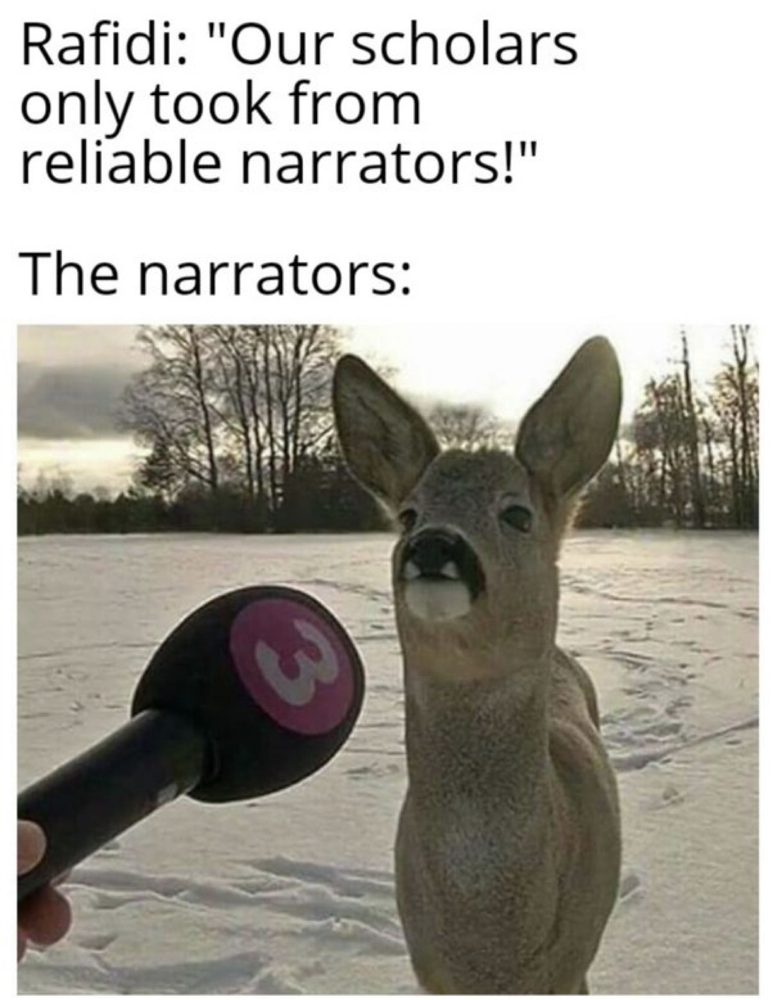

It is narrated that Amir al-Mu’mini (a.s.) has said, "That donkey spoke to the
Messenger of Allah say, May Allah take my soul and the soul of my parents in service for
your cause, my father related to me from his father from his grand father from his father who
lived with Noah in the Ark. Once Noah came to him and whipped his on his back and said,
"From the descendents of this donkey there will a donkey on whose back the master and the
last of the prophets will ride. I thank Allah who has made me that donkey."
Al-Kafi 629
